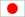

Home Page
What's New
FAQs
Projects
Weblog
Recognition
Credits
Resume
Email me
| What's new on Choudhary's website |
|
7 Dec 17 updated flags translation in Whatsnew page and in Index page. More recent pic on homepage. Minor touchup in resume page
24 June 07 added LinkedIn profile connectivity in resume page

27 may 07 added skype call
option
25 Feb 07 Routine maintainance
3 Aug06 Added Counters (invisible ;) courtsey statcounter)
21 Jul 06 Added the Google translate functionality for webpages
English to French
English to Chinese

English to Japanese
English to German
15 Dec 05 Got married - (add Marriage link photographs)
19 Oct 05 - Updated Credits page
for Neil sir + added some more links in Brain Fodder + made LearningCurve and To Do as XHTML compliant
13 Oct 05 Added a no frills single page PDF
Resume Thanks to Jeff for the idea of American one page resume
13 sept - < br >< / br > has different behavoir on IE and in Mozilla < br /> is better. Corrected this across my site
9- Sep 05 updated the http://www.onelife.in site to have my
website without the ADs and .. yes .. around 90% of valid pages.
26 Jul - Added a list of To Do before I die stuff here
26- Jul Added a learning Curve to have a list of Nuggets of Wisdom. coming from anywhere. can be technical as well as practical
See my weblog for the latest on what I'm thinking.
Here is the oldindex page. (in case you still miss it )
Credits Contains the places from wehre i have copied things ;->
11iE business Suite (in List of Projects)
Project Perl (Contains the info of my learning Perl )
ArtWork contains the info about the few artworks of mine that are also available on net. (Most of them are on paper and not scanned to digital.format )
a resume which can contain my .. art qualifications.
2 page resumes
an Resume page for online viewing